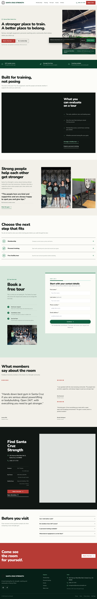
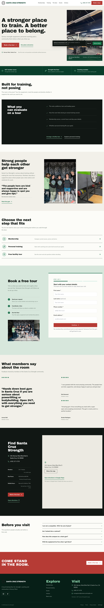

<title>Santa Cruz Strength: local review</title>
<style>
  :root { --paper:#f2f0e9; --ink:#111714; --muted:#526058; --green:#0f6842; --red:#b63b35;
          --rule:#bdc7bf; --card:#fcfcf8; }
  @media (prefers-color-scheme: dark) {
    :root { --paper:#12160f; --ink:#eef1e9; --muted:#9aa79d; --green:#6cc39a; --red:#e08a84;
            --rule:#33403a; --card:#1a201b; }
  }
  :root[data-theme="dark"] { --paper:#12160f; --ink:#eef1e9; --muted:#9aa79d; --green:#6cc39a;
    --red:#e08a84; --rule:#33403a; --card:#1a201b; }
  :root[data-theme="light"] { --paper:#f2f0e9; --ink:#111714; --muted:#526058; --green:#0f6842;
    --red:#b63b35; --rule:#bdc7bf; --card:#fcfcf8; }
  body { background:var(--paper); color:var(--ink); margin:0;
         font:16px/1.6 system-ui,-apple-system,"Segoe UI",sans-serif; }
  main { max-width:64rem; margin:0 auto; padding:3rem 1.25rem 6rem; }
  h1 { font-size:clamp(2rem,5vw,3rem); line-height:1.03; letter-spacing:-.03em; margin:0 0 .5rem; }
  h2 { font-size:1.3rem; letter-spacing:-.02em; margin:3rem 0 .6rem; padding-top:1.2rem;
       border-top:2px solid var(--ink); }
  h3 { font-size:.95rem; text-transform:uppercase; letter-spacing:.09em; color:var(--green);
       margin:1.8rem 0 .4rem; }
  .lede { color:var(--muted); max-width:48rem; }
  .scroll { overflow-x:auto; margin:.8rem 0; }
  table { border-collapse:collapse; width:100%; font-size:.88rem; min-width:36rem; }
  th,td { text-align:left; padding:.5rem .6rem; border-bottom:1px solid var(--rule); vertical-align:top; }
  th { font-size:.7rem; text-transform:uppercase; letter-spacing:.08em; color:var(--muted); }
  code { font-size:.85em; background:var(--card); border:1px solid var(--rule); padding:.05em .3em; }
  .ok { color:var(--green); font-weight:700; }
  .no { color:var(--red); font-weight:700; }
  .card { background:var(--card); border:1px solid var(--rule); border-left:4px solid var(--green);
          padding:1rem 1.15rem; margin:1rem 0; }
  .card.bad { border-left-color:var(--red); }
  figure { margin:1.5rem 0; }
  img { max-width:100%; height:auto; border:1px solid var(--rule); display:block; }
  figcaption { font-size:.8rem; color:var(--muted); margin-top:.4rem; }
  .grid { display:grid; gap:1.25rem; grid-template-columns:repeat(auto-fit,minmax(17rem,1fr)); }
  ul,ol { padding-left:1.15rem; }
  li { margin:.3rem 0; }
  .kv { display:grid; grid-template-columns:auto 1fr; gap:.2rem 1rem; font-size:.9rem; }
  .kv dt { color:var(--muted); }
  .kv dd { margin:0; }
</style>

<main>
  <h1>Local review</h1>
  <p class="lede">Santa Cruz Strength, converged and verified locally. Nothing pushed, nothing
    deployed, nothing activated. Every provider remains incapable of sending.</p>

  <h2>Run it yourself</h2>
  <div class="card">
    <dl class="kv">
      <dt>Site</dt><dd><code>http://127.0.0.1:3100</code>, the real production build</dd>
      <dt>API</dt><dd><code>http://127.0.0.1:8100</code>, the real backend on an in-memory database</dd>
      <dt>Build</dt><dd><code>cd frontend &amp;&amp; REACT_APP_BACKEND_URL=http://127.0.0.1:8100 npm run build</code></dd>
      <dt>Backend</dt><dd><code>scratchpad/scsvenv/bin/python scratchpad/run_local.py</code></dd>
      <dt>Tests</dt><dd><code>cd backend &amp;&amp; scsvenv/bin/python -m unittest discover -s tests</code></dd>
    </dl>
  </div>
  <div class="card bad">
    <strong>Use <code>npm run build</code>, never <code>npx craco build</code>.</strong> The route
    shells, the sitemap and every piece of per route metadata are produced by the
    <code>prebuild</code> and <code>postbuild</code> hooks, which <code>npx</code> skips silently. A
    craco only build compiles green and emits one <code>index.html</code> with no canonicals, no
    Article schema and no font preloads. Several verifications in this session, including my own,
    were run against that incomplete artifact before it was caught.
  </div>

  <h2>Before and after</h2>
  <div class="grid">
    <figure>
      
      <figcaption>Before. Six near identical stacked bands, hero photograph boxed top right, dead
        grey rectangle where the map frame failed.</figcaption>
    </figure>
    <figure>
      
      <figcaption>After. Real typographic scale, the room given its own space, an intentional map
        placeholder, objection led FAQ.</figcaption>
    </figure>
  </div>
  <figure>
    
    <figcaption>The hero at 1440. Headline names the category and the town; the subline answers the
      two objections it creates.</figcaption>
  </figure>

  <h2>What was made true</h2>
  <div class="scroll">
  <table>
    <tr><th>Surface</th><th>Before</th><th>After</th><th>Proof</th></tr>
    <tr><td>Backend tests</td><td>95</td><td class="ok">132, OK</td><td>every new test proven to fail
      against a deliberately broken build first</td></tr>
    <tr><td>Frontend tests</td><td>20</td><td class="ok">27, all pass</td><td><code>craco test</code></td></tr>
    <tr><td>SEO checks</td><td>17</td><td class="ok">28, all pass</td><td><code>validate-seo.mjs</code></td></tr>
    <tr><td>Route shells</td><td>1</td><td class="ok">29 plus 404.html</td><td>unique title, canonical
      and 4 font preloads each</td></tr>
    <tr><td>Article schema</td><td>0 of 17</td><td class="ok">15 of 15 indexable</td><td>BlogPosting
      plus BreadcrumbList; the 2 consolidated slugs correctly emit none</td></tr>
    <tr><td>Social preview image</td><td class="no">404, file never existed</td><td class="ok">real
      photo, true dimensions</td><td><code>/assets/scs/facility.jpg</code></td></tr>
    <tr><td>Third party on load</td><td class="no">Google Fonts, 2 Maps frames</td>
      <td class="ok">none</td><td>0 iframes before click, <code>gtag</code> undefined</td></tr>
    <tr><td>Providers reachable</td><td colspan="2" class="ok">none, all 14 gates deny by default</td>
      <td>a key is not sufficient to send</td></tr>
    <tr><td>Mobile at 390</td><td class="no">never checked</td><td class="ok">no overflow</td>
      <td><code>scrollWidth === innerWidth</code>, zero offenders</td></tr>
  </table>
  </div>

  <h2>Defects found and closed</h2>
  <ol>
    <li><strong>The owner could not edit his own headline.</strong> The staff Content Manager wrote
      <code>home_hero_headline</code> while the homepage read <code>home_hero_headline_v2</code>.
      Saving did nothing and reported no error. Fixed on both sides, seeded, and guarded by two
      tests: one that every key the page reads is seeded, and one that each seeded value matches its
      fallback. The second exists because the first passed while the page still rendered the old
      copy.</li>
    <li><strong>A second path from a lead to a provider.</strong> <code>send_lead_emails</code> and
      <code>send_lead_sms</code> duplicated the outbox payloads while bypassing its idempotency,
      claiming, leasing and quarantine. Both dead, both one caller from live. Deleted, and guarded by
      an AST walk that fails on any function reaching a provider outside an allowlist.</li>
    <li><strong>A quarantined CRM replay reported success on a fake identifier.</strong> A claim
      whose outcome was never learned was returned as a receipt, marking the job succeeded on an id
      no vendor issued. Now refuses with <code>gymmaster_claim_unresolved</code>, non retryable, so a
      human checks GymMaster.</li>
    <li><strong>MailerSend was still published.</strong> Three webhook routes and a runtime flag
      survived the T-5 removal. Removed entirely. The routes were already 503 stubs that never
      reached their handler, so the STOP path they appeared to serve was unreachable code.</li>
    <li><strong>A dead route in Express syntax.</strong> <code>/blog/:slug</code> could never match
      in FastAPI. Deleted.</li>
    <li><strong>Every shared link showed a broken preview.</strong> <code>og:image</code> pointed at
      a file that has never existed in this repository.</li>
    <li><strong>Two article pairs competed for one query each.</strong> One pair shared a verbatim
      identical heading. Consolidated by cross canonical, deliberately without noindex, because the
      two signals together are contradictory and the consolidation gets discarded.</li>
  </ol>

  <h2>Corrections on the record</h2>
  <p class="lede">Recorded rather than quietly fixed, because each one was a claim made confidently
    and wrongly, and the pattern matters more than the individual errors.</p>
  <div class="card bad">
    <ol>
      <li><strong>Staffed hours.</strong> I wrote copy stating Monday to Friday 9am to 7pm from a
        screenshot. <code>config/index.js</code> says 8 AM to 7 PM, and it carries a comment naming
        itself the single source. That would have published a false claim.</li>
      <li><strong>Price and contract.</strong> I staged both as facts nobody had.
        <code>MEMBERSHIP_TIERS</code> holds nine tiers with real prices and
        <code>MEMBERSHIP_FEE_NOTE</code> the cancellation rule. A project memory already recorded
        this. I concluded absence without searching.</li>
      <li><strong>Phone.</strong> I put (408) 337-6708 into three agent briefs. It is 6709.</li>
      <li><strong>Font paths.</strong> I wrote <code>url(/fonts/...)</code>, which cannot resolve at
        build time because <code>public/</code> is copied rather than resolved. It blocked every
        agent's build until two of them caught it.</li>
      <li><strong>Nunito.</strong> I self hosted a font that was already a dependency and already
        imported. Twelve redundant faces, deleted.</li>
      <li><strong>A rejection I got wrong.</strong> I rejected a mongomock finding after failing to
        reproduce it. The cause was a conjunction I had not included: a projection plus a self
        invalidating filter. Reproduced and accepted once the correction arrived.</li>
    </ol>
  </div>

  <h2>What is not done</h2>
  <h3>Blocked on Mike</h3>
  <ul>
    <li>Written likeness permission for the identifiable people in
      <code>SCS_MEDIA_AWAITING_PERMISSION</code>.</li>
    <li>A dated confirmation of hours. Until it exists, schema deliberately omits
      <code>openingHoursSpecification</code> and a validator check enforces that.</li>
    <li>Parking, tour booking rule, and the gym's genuinely busiest hour.</li>
    <li>An internal contradiction only he can settle: <code>GYM_CONFIG.hours</code> says day passes
      run 9:00 to 18:00, while the day pass tier's own terms say "access during staffed hours",
      which the same file puts at 8:00 to 19:00.</li>
  </ul>
  <h3>Blocked outside the code</h3>
  <ul>
    <li><strong>Twilio is rejected at the carrier</strong>, errors 30896 and 30917, and the toll free
      number is unverified and messaging disabled. No code change fixes this.</li>
    <li><strong>GymMaster cannot be configured.</strong> The account holds zero members, no
      membership types and no billing provider, and nobody has read a <code>companyid</code> out of
      it. The adapter is written, cited and tested, and it refuses to construct.</li>
    <li><strong>Soft 404.</strong> There is no hosting configuration anywhere in the repository, so
      the host level rule that would return a real 404 status cannot be written. Client side noindex
      is in place; non rendering crawlers remain exposed.</li>
    <li><strong><code>leads_export.csv</code></strong> is still committed: 1,386 real customer
      records on a repository with a live remote.</li>
    <li><strong>The disclosed owner credential</strong> still needs rotating. It now sticks, since
      the startup force reset is gone.</li>
  </ul>
  <h3>Known engineering limits, documented not hidden</h3>
  <ul>
    <li>Lease expiry uses the calling worker's clock. Not faked with <code>$$NOW</code>, because
      every timestamp is an ISO string and MongoDB would compare it against a Date by BSON type
      rather than chronologically. Bounded instead by the reservation token, and proven: a lost race
      cannot become a second send. <strong>Operational requirement: one dispatch worker, or
      synchronised clocks.</strong></li>
    <li>The local harness cannot exercise the outbox claim path. mongomock returns
      <code>None</code> when a projection is supplied and the update makes the document stop matching
      its own filter, which is exactly the atomic claim shape. A tooling limit, not a product
      defect. No product code was changed to accommodate it.</li>
    <li>Codex produced no usable output across three runs. Each spent its time loading unrelated
      global persona configuration before dying. The adversarial review that did happen was a manual
      trace, and it is labelled as such.</li>
  </ul>

  <h2>Safety, unchanged</h2>
  <ul>
    <li>Push target is still <code>no_push</code>. Nothing committed, nothing deployed.</li>
    <li>All 14 <code>ALLOW_*</code> flags default disabled. The local instance enables only database
      writes and seeding.</li>
    <li>No production credential or connection string exists anywhere in the tree.</li>
    <li>Analytics is doubly gated: consent, and a hostname check for the production domain. Verified
      inert locally, <code>gtag</code> is undefined.</li>
    <li>The CRM boundary module still contains no HTTP client at all, so it cannot make a network
      call regardless of configuration. A test asserts the absence.</li>
  </ul>
</main>
